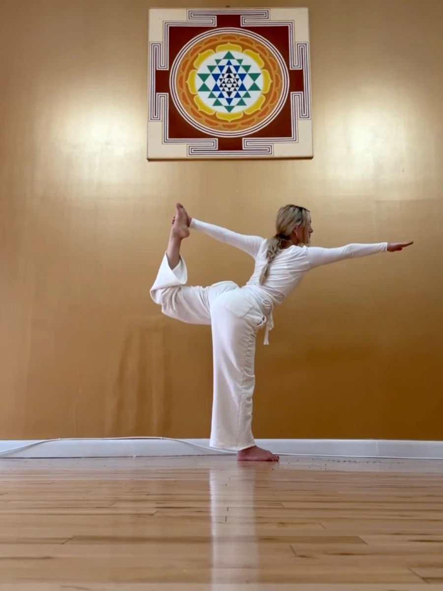
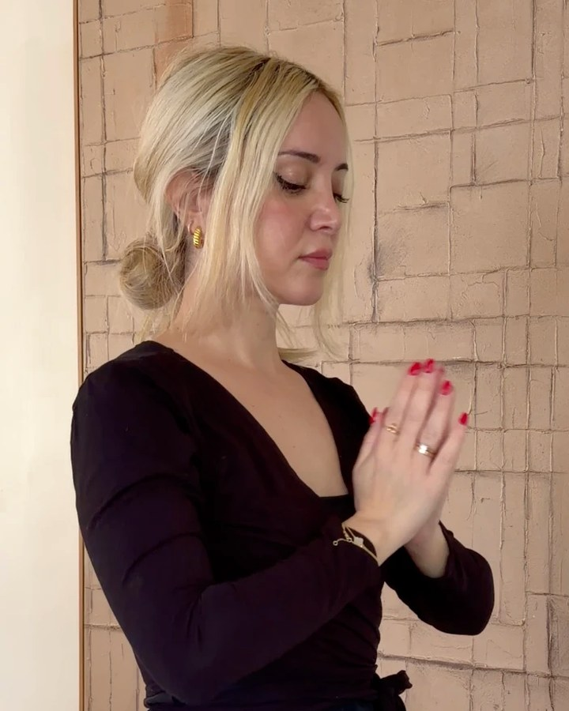

Prenatal & Postnatal Yoga
A small group for expecting and new mothers. If you're pregnant or recently postpartum, write to me and I'll let you know when sessions begin.
Join the waitlistFor when you feel lost, stuck or dimmed. Traditional Hatha Yoga for women — for the body, the inner life, and every season you move through. Online and in New York.

A Hatha practice builds from within. When your relationship with yourself becomes steady, everything else has something to rest on. Whatever falls apart in life — what you build through practice stays with you. I am a guide. You are doing the work. That is how resilience is built.
Three ways to begin. Each one is open now.
A complete traditional practice for body, breath and mind. Leave grounded, rested and quieter inside.
You've been told to relax. You've been tracking, waiting, hoping. This class won't fix that — but it will give you 75 minutes where your body is finally on your side.
An intimate group of 6 to 8 women — held, not lost. A space where the women beside you understand, because they are in it too.
Each class is complete on its own. The 6-week series builds week by week — your body, breath and nervous system deepen together over time.
Drop-in · $28 6-Week Series · $120One to one guidance for when you need to come back to yourself. Every session is shaped around you and where you are.
Moving through a fertility journey? Private sessions can be shaped entirely around your cycle, your body, and where you are right now.
Book a sessionNo music — the attention moves inward. Poses are held a little longer than in a vinyasa class, giving your body time to open and settle. No headstands or advanced poses. Every class ends with Yoga Nidra: a guided rest where you lie down completely. You can turn your camera off during that — that time is entirely yours.
Hatha is where yoga begins. Every body, every age, every level is welcome here. Having your camera on simply helps me offer you a variation in real time — but you are always in charge of your practice. My first priority is that you feel safe and that you enjoy it.
Offered as seva — service without expectation. Open to everyone, 15 spots each month. No commitment, no payment. Just come.
Write to me and I'll send you the link before each class.
Save a spot
I had been practicing Yoga for years when I felt — there was something more than the physical movement. I trained in Traditional Hatha Yoga. The Yoga that has been passed from teacher to student for thousands of years — what they still practice in India as their Sadhana, their spiritual practice. After reading, searching, and finishing my training, it all made sense. Yoga philosophy runs that deep. It speaks to the questions that never leave us — who we are, how we live, what we are here to do.
My path led me to New York, and there I found one of the oldest lineages in the West.
Teaching traditional Hatha is how I honour this tradition. I am a vessel for an ancient wisdom, and I carry that with devotion. I keep learning, I keep studying, and I carry this tradition into the modern world — without losing what makes it sacred.
The door is always open. Come when you're ready.
Join a waitlist and you'll be the first to hear when these open.
A small group for expecting and new mothers. If you're pregnant or recently postpartum, write to me and I'll let you know when sessions begin.
Join the waitlistA 6-week beginner immersion in the traditional system: the breath, the body, the mind and how they come together. Ten spots, $197 for the full course.
Join the waitlistNo. Hatha Yoga is where yoga begins. Every level is welcome — the poses are always offered with variations so you practice in a way that is right for your body today.
A yoga mat, enough floor space to lie down, and a device with a camera. That's it. Wear something comfortable you can move in. Having your camera on helps me offer you a variation in real time — but you are always in charge.
Yoga Nidra means yogic sleep — a guided practice where you lie down completely still while I lead your awareness through the body. It is deeply restorative. You don't need to do anything except be there. Most students find it the part of class they look forward to most.
Hatha is slower and more deliberate. Poses are held longer, there is no music, and the practice works with breath and stillness rather than flow and movement. Less about the workout — more about what happens inside.
Yes. The class is open to any woman on a fertility journey — whether you are trying naturally, between cycles, or in the middle of treatment. You don't need to explain where you are. You just come.
Classes are live and not currently recorded. The practice is about being present in real time — that is part of what makes it work.
Please cancel at least 24 hours before your class. Late cancellations and no-shows are charged in full — this holds your commitment to the practice and respects the spot held for you.
Tell me a little about where you are and what you're looking for. I read every message myself.
Prefer to book straight away? Choose a class time in my calendar.